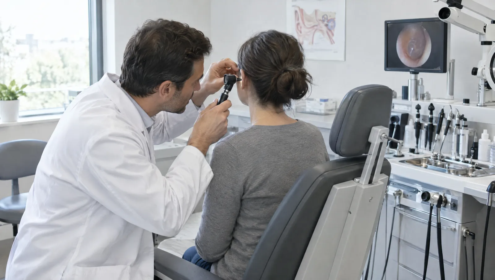

KBB uzmanı neye bakar?
Kulak burun boğaz uzmanı; işitme, denge, koku, yutma ve ses gibi günlük hayatı doğrudan etkileyen işlevlerle ilgilenir. Muayenede kulak zarını, burun içini ve boğazı ışıklı aletlerle inceler. Bademcik ve geniz eti ameliyatları, burun eğriliğinin düzeltilmesi ve kulak tüpü takılması da bu bölümün cerrahi işleri arasındadır.
Burun tıkanıklığı çoğu zaman küçük bir rahatsızlık gibi görünür. Oysa ağızdan nefes almaya, horlamaya ve uyku kalitesinin düşmesine yol açabilir. Çocuklarda büyük geniz eti işitmeyi ve okul başarısını etkileyebilir. Bu yüzden şikâyetin ne zamandır sürdüğü ve hangi durumda arttığı önemlidir. Gerektiğinde hekiminiz işitme testi, sinüs tomografisi ya da alerji açısından kan tahlili ister.

Kulak, burun ya da boğazınız bu şikâyetleri veriyorsa
- İki haftadan uzun süren ses kısıklığı
- Bir kulakta aniden azalan işitme ya da çınlama
- Yılda birkaç kez tekrarlayan bademcik iltihabı
- Sürekli burun tıkanıklığı ve ağızdan nefes alma
- Yüzde baskı hissiyle birlikte koyu renkli burun akıntısı
- Baş dönmesi, dengesizlik ya da odanın dönme hissi
- Boyunda ele gelen ve geçmeyen şişlik
- Kulak akıntısı ya da kulakta dolgunluk hissi
Acil durumda beklemeyin
Nefes almayı zorlaştıran boğaz şişliği, ağzınızı açamayacak kadar şiddetli boğaz ağrısı ya da durmayan burun kanaması acil durumdur. Yüz felci ya da bir kulakta aniden işitmenin gitmesi de zaman kaybını kaldırmaz. Bu durumlarda 112 ile iletişime geçin ya da en yakın acil servise gidin.
Kulaktan gırtlağa takip ettiğimiz sorunlar
- Orta kulak iltihabı
- Dış kulak yolu iltihabı
- Kulak kiri tıkacı
- İşitme kaybı ve çınlama
- İç kulak kaynaklı baş dönmesi (vertigo)
- Akut ve kronik sinüzit
- Burun kemiği eğriliği (septum deviasyonu)
- Alerjik nezle
- Bademcik ve geniz eti büyümesi
- Ses teli nodülleri ve polipleri
- Horlama
- Boyunda kitle
İşitme, burun ve gırtlak için yapılan incelemeler
Odyometri (işitme testi)
Ses yalıtımlı bir kabinde kulaklıktan farklı tonlarda sesler duyarsınız ve her seste işaret verirsiniz. İşitme kaybının derecesini ve tipini gösterir.
- Süre
- 20-30 dakika
- Hazırlık
- Testten önceki gün gürültülü ortamlardan uzak durun
Timpanometri
Kulak yoluna yerleştirilen küçük bir uç, kulak zarının hareketliliğini ölçer. Orta kulakta sıvı olup olmadığını anlamaya yarar; çocuklarda sık kullanılır.
- Süre
- Birkaç dakika
- Hazırlık
- Hazırlık gerekmez
Burun ve gırtlak endoskopisi
İnce bir kamerayla burun içi, geniz ve ses telleri ekranda incelenir. Uzun süren ses kısıklığında ve tıkanıklıkta ayrıntılı görüntü sağlar.
- Süre
- 5-10 dakika
Sinüs tomografisi
Sinüslerin içini ve burun yapısını kesitler halinde gösterir. Kronik sinüzit değerlendirmesinde ve ameliyat planlamasında kullanılır.
- Süre
- Çekim birkaç dakika
- Hazırlık
- Hazırlık gerekmez
Kulak temizliği
Kulak yolunu tıkayan kir ılık suyla ya da özel aletlerle çıkarılır. Kire bağlı işitme azalması çoğu zaman işlemden hemen sonra düzelir.
- Süre
- 5-15 dakika
Pozisyonel baş dönmesi testleri
Başınız belirli açılarla çevrilirken hekim göz hareketlerinizi izler. İç kulaktaki kristallere bağlı baş dönmesini ayırt eder; bazı tiplerde aynı seansta düzeltici manevra yapılabilir.
- Süre
- 15-20 dakika
- Hazırlık
- Dönüşte araç kullanmamak için yanınıza bir refakatçi alın
KBB muayenesinden önce dikkat edilecekler
- Kulağınızı çubukla temizlemeyin; muayene bulgusunu değiştirebilir
- Burun spreyi kullanıyorsanız adını ve ne kadar süredir kullandığınızı yazın
- Çocuğunuz için geliyorsanız yılda kaç kez boğaz enfeksiyonu geçirdiğini hesaplayın
- Daha önce çekilmiş sinüs tomografisi ya da işitme testi varsa getirin
- İşitme kaybı varsa hangi kulakta ve ne zamandır olduğunu not edin
Kulak Burun Boğaz hekimleri

Kulak, burun ve boğaz şikâyetlerinde aklınıza takılanlar
Bademcik ameliyatı hangi durumda gündeme gelir?
Karar yalnız enfeksiyon sayısına bakılarak verilmez. Yılda çok sayıda ateşli bademcik iltihabı geçirmek, bademcik çevresinde apse gelişmesi ya da büyük bademciklerin uykuda nefesi tıkaması ameliyatı gündeme getirir. Çocuklarda büyümeye ve okul hayatına etkisi de hesaba katılır. Hekiminiz geçmiş enfeksiyon kayıtlarınızı ve muayene bulgusunu birlikte değerlendirir.
Burun açıcı spreyi uzun süre kullanmak zararlı mı?
Bu spreyler birkaç günden uzun kullanıldığında burun dokusu ilaca alışabilir. Sprey bırakılınca tıkanıklık daha da artar ve kısır bir döngü başlar. Hangi spreyi ne kadar süredir kullandığınızı muayenede söyleyin; çözüm buna göre planlanır.
Kulak çınlaması geçer mi?
Çınlamanın nedeni bulunduğunda bazen tamamen ortadan kalkar. Örneğin kulak kiri, orta kulakta sıvı ya da bir ilacın yan etkisi düzeltilebilir nedenlerdir. Gürültüye bağlı ya da yaşla gelen işitme kaybında ise çınlama kalıcı olabilir. Bu durumda amaç, çınlamayı günlük hayatta daha az fark edilir hale getirmektir. Stres ve uykusuzluk çınlamayı artırabilir; bu yüzden uyku düzeniniz de konuşulur. Değerlendirme işitme testiyle başlar.
Çocuğum neden ağzı açık uyuyor?
Ağız açık uyumak, burun ya da genizden yeterli hava geçmediğini gösterebilir. Sık nedenlerden biri büyük geniz etidir. Uzun sürerse horlama, dikkat dağınıklığı ve tekrarlayan kulak iltihabı görülebilir.
Baş dönmesi kulaktan kaynaklanabilir mi?
Evet. İç kulak, dengeyi sağlayan organlardan biridir. Başınızı çevirdiğinizde ya da yatakta döndüğünüzde saniyeler süren dönme hissi çoğu zaman iç kulaktan kaynaklanır. Bu tip baş dönmesi korkutucu olsa da çoğunlukla tehlikeli değildir. Ataklar arasında kendinizi iyi hissetmeniz de bu tablo için tipiktir. Muayene sırasında yapılan bazı baş hareketleri hem tanıya hem tedaviye yardım eder. Konuşma bozukluğu, yüzde kayma ya da kol ve bacakta güçsüzlük eşlik ediyorsa durum farklıdır; hemen 112'yi arayın.
Bu sayfayı Op. Dr. Hande Çakır gözden geçirdi. Son güncelleme: 7 Ekim 2026.